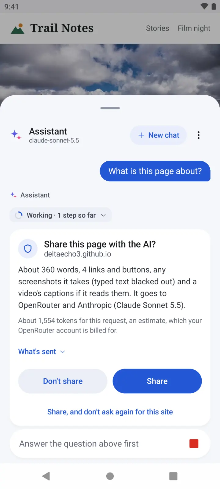
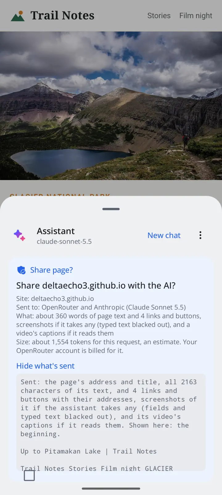
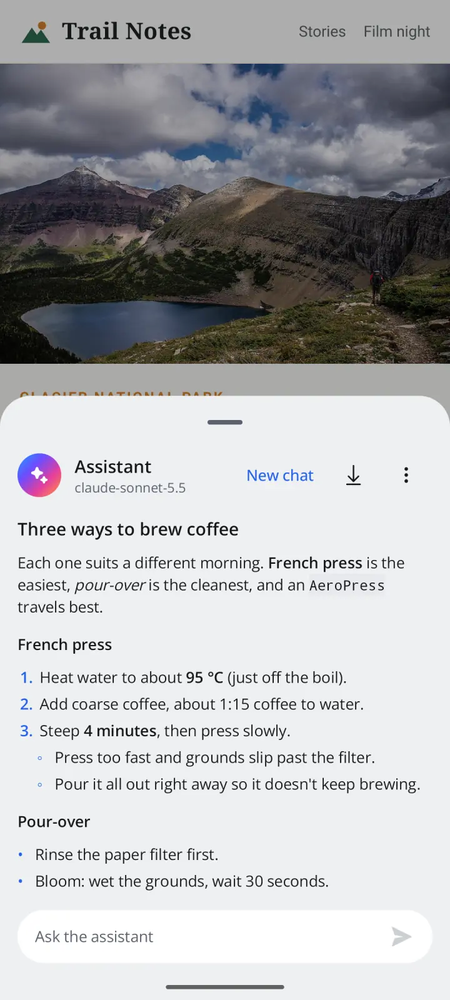
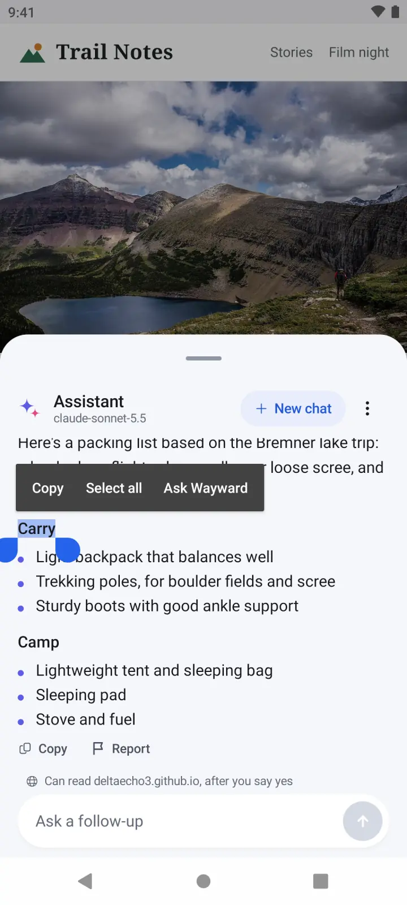
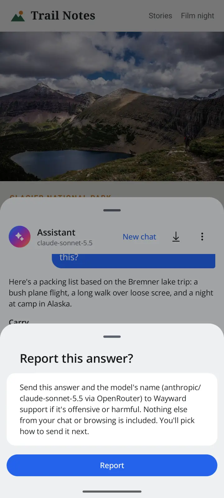

Ask about a page
How-to
Ask what the current page says, for a summary, or anything about it. It only reads the page after you've seen what would be shared and said yes (unless you chose otherwise).
Ask
- Open the page and tap the assistant's button in the middle of the bar (TalkBack: AI assistant).
- The panel opens at the bottom: the assistant's mark, its name, the model under it, and your chat. An empty chat offers three examples to tap: What's this page about?, Download this video in 720p and Find videos about sunsets.
- Type your question in the message box (it says "Ask" and the assistant's name) and tap Send.

The sharing card
Before the assistant reads a page, it asks with Share page?:
- the site, and where it would go (your provider and model),
- what goes: about how many words of the page's text and how many links and buttons, any screenshots it takes (with typed text blacked out), and a video's captions if it reads them,
- other sites shown inside the page, whose text and buttons would go too,
- the size, as an estimate in tokens, which your provider bills you for.
Tap Preview what's sent to see the beginning of exactly what goes (Hide what's sent folds it away). Then tap Share, or Don't share. Tick "Always share" and the site's name to skip the card for that site from now on.


Sites you always share are listed in Settings > AI assistant under Sharing pages, each with Remove. There's also Always share pages, which skips the card on every site, after warning you (Share pages without asking?). Private tabs are never shared, and a locked tab only after you've unlocked it.
While it works, and its answer
Small step lines show what it's doing, like Reading the page, and your answers to its cards show as "You allowed:" or "You denied:". While it works, Send turns into a red Stop; tap it and the chat says Stopped.
Answers are formatted, with headings, lists, tables, quotes and code, and links in them open in a new tab next to your page. Hold a message to select and copy its text.


If an answer is offensive or harmful, tap Report under it. Report this answer? sends that answer and the model's name to Wayward's support, through Android's share sheet, and nothing else from your chat or browsing.

Your chat stays
The chat is kept on your phone, encrypted, and comes back after you close Wayward, so you can carry on. Follow-up questions keep what the last messages read. To start fresh, or save it, see save, open or delete a chat. The ⋮ in the panel's top corner also has Settings, which goes straight to the assistant's settings.
The assistant doesn't work in private tabs. There the panel says it doesn't, and to switch to a regular tab.